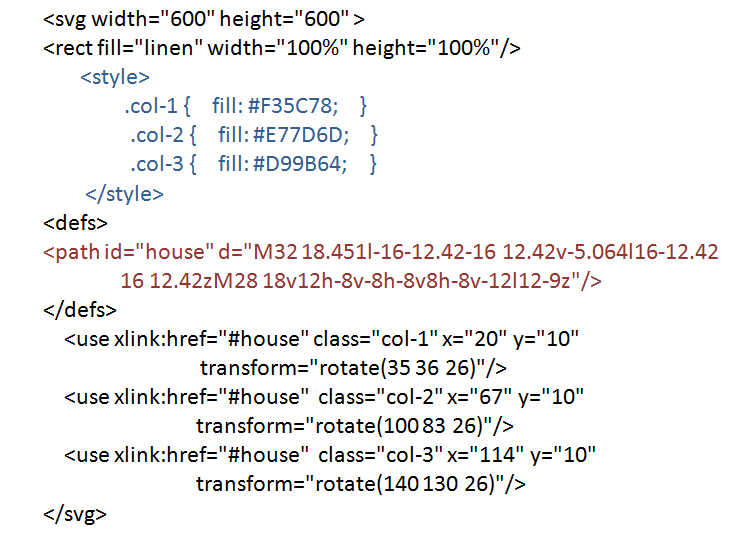

Работа с графикой. Знакомство с svg-графикой.
Рисование svg-фигур
Цель: изучить способы вставки SVG-изображения на web-страницу, принципы создания svg-фигур иsvg-контуров; познакомиться с правилами применения трансформации и градиентной заливки к фигурам.
Теория
SVG (Scalable Vector Graphics – масштабируемая векторная графика) – стандарт векторной графики, разработанный консорциумом W3C.
Файлы с расширением .svg сохраняют двухмерную графику. Формат SVG базируется на расширяемом языке разметки XML. Именно поэтому, хотя в файле и хранится информация об изображении, он представлен в текстовом формате. SVG поддерживается всеми современными браузерами для ПК и мобильных телефонов.
Достоинства SVG.
Графика в формате SVG создается с использованием математических формул, которые при изменении размера изображения можно скорректировать. Таким образом, векторные изображения масштабируются лучше, чем растровые.
Размер векторной картинки обычно меньше, чем у сравнимых по качеству изображений в форматах JPEG, GIF или PNG.
SVG графика имеет текстовый формат, который можно и править в блокноте, и рисовать в графических векторных редакторах Adobe Illustrator, CorelDRAW.
Cкрипты и анимация в SVG позволяют создавать динамичную и интерактивную графику.
В SVG изображение можно добавлять ссылки.
К SVG формату можно подключать внешние таблицы стилей CSS, глобальные стили внутри контейнера <style>...</style> или добавлять внутренние стили с помощью атрибута style в тегах фигур и путей.
Вставка SVG на Web-страницу.
SVG-изображение можно вставить на Web-страницу несколькими способами. Первый из них – это простая вставка SVG-кода на страницу (при большой картинке HTML-код страницы станет огромным и трудно читаемым). При других способах сначала надо сохранить SVG-код в файле с расширением .svg.
Итак, способы вставки SVG-изображения на Web-страницу:
-
прямая вставка кода в HTML-документ в контейнере <svg>...</svg>:
<svg xmlns="http://www.w3.org/2000/svg" version="1.1"> <!-- SVG-код --> </svg>;
-
использование SVG-файла в качестве фонового изображения:
<style>
.home {
display: block;
width: 200px;
height: 300px;
background: url(example.svg) 0 0;
background-size: contain;
}
</style>
<a href="/" class="home"></a>;
-
подключение SVG-файла в HTML-документ с помощью тегов img, embed, object и iframe:
<img src="example.svg"> <embed src="example.svg" type="image/svg+xml"> <object data="example.svg" type="image/svg+xml"></object> <iframe src="example.svg" width="200" height="300" style="border: none"></iframe>;
-
подключение SVG-файла в PHP-документ с помощью функции include:
<? include("example.svg"); ?>.
Примеры простых фигур:
линия
<line x1="220" y1="10" x2="20" y2="130" stroke="violet" stroke-width="5" />;
ломаная
<polyline points="5,135 30,5 55,135 80,5, 105,135 130,5, 155,135 180";
замкнутая фигура, в данном случае треугольник
<polygon points="5,135 115,5 225,135" fill="violet" stroke="purple" stroke-width="5" />;
прямоугольник
<rect x="5" y="5" width="220" height="130">;
прямоугольник с закругленными углами
<rect x="5" y="5" width="220" height="130" rx="20" ry="40">;
круг
<circle r="65" cx="70" cy="70">;
эллипс
<ellipse rx="110" ry="60" cx="115" cy="70">.
Следующий пример демонстрирует код с трансформацией:
<svg width = “230” height = “140”> <ellipse rx="110" ry="30" cx="115" cy="70" fill=”gold” stroke=”orange” stroke-width=”5” transform =”rotate(-23 115 70”/> </svg>
Виды трансформации:
-
rotate(rotate-angle [cx cy]) – поворот;
-
scale(sx [sy]) – масштабирование;
-
translate(tx [ty]) – перенос;
-
skewX(skew-angle) – наклон по оси X;
-
skewY(skew-angle) – наклон по оси Y.
В теге <defs> (бибиотека элементов и эффектов) можно задать градиентную заливку (linearGradient, radialGradient) и применить ее к отдельным фигурам. Например,
<defs> <linearGradient id = “MyGradient”> <stop offset = “30%” stop-color = “red”/> <stop offset = “70%” stop-color = “yellow”/> </linearGradient> </defs> <rect x = “0” y = “0” width = “150” height=”150” fill = “url(#MyGradient)”/>
Для сложных контуров существует тег <path>. Однако лучше нарисовать фигуру в векторном графическом редакторе и, сохранив в формате svg, скопировать тег path со всеми заданными координатами.
SVG фигуры можно нарисовать в векторных редакторах Adobe Illustrator, CorelDRAW, Inkscape (рекомендуемый свободный редактор SVG-графики). При сохранении графического файла в формате SVG сложные контуры записываются в теге path.
Примеры иконок в svg формате, нарисованных в графических редакторах
<path id="home" d="M100 59.375l-18.75-18.75v-28.125h-12.5v15.625l-18.75-18.75-50 50v3.125h12.5v31.25h31.25v-18.75h12.5v18.75h31.25v-31.25h12.5z"/>
<path id="heart" d="M100 34.976c0 8.434-3.635 16.019-9.423 21.274h0.048l-31.25 31.25c-3.125 3.125-6.25 6.25-9.375 6.25s-6.25-3.125-9.375-6.25l-31.202-31.25c-5.788-5.255-9.423-12.84-9.423-21.274 0-15.865 12.861-28.726 28.726-28.726 8.434 0 16.019 3.635 21.274 9.423 5.255-5.788 12.84-9.423 21.274-9.423 15.865 0 28.726 12.861 28.726 28.726z"/>
<path id="cog" d="M100 59.384v-18.768l-14.333-2.389c-0.582-1.771-1.291-3.483-2.119-5.127l8.443-11.82-13.271-13.271-11.799 8.428c-1.651-0.835-3.373-1.552-5.153-2.139l-2.383-14.298h-18.768l-2.383 14.298c-1.78 0.587-3.502 1.304-5.153 2.139l-11.8-8.428-13.271 13.271 8.443 11.82c-0.827 1.644-1.537 3.356-2.118 5.127l-14.333 2.389v18.768l14.367 2.395c0.582 1.755 1.29 3.452 2.113 5.081l-8.471 11.86 13.271 13.271 11.88-8.486c1.621 0.815 3.31 1.516 5.055 2.093l2.4 14.402h18.768l2.4-14.402c1.746-0.577 3.434-1.278 5.055-2.093l11.88 8.486 13.271-13.271-8.471-11.86c0.823-1.629 1.531-3.326 2.113-5.081l14.367-2.394zM50 62.5c-6.904 0-12.5-5.596-12.5-12.5 0-6.904 5.596-12.5 12.5-12.5 6.904 0 12.5 5.596 12.5 12.5 0 6.904-5.596 12.5-12.5 12.5z"/>
<path id="camera" d="M29.688 59.375c0 11.218 9.094 20.313 20.313 20.313s20.313-9.094 20.313-20.313-9.094-20.313-20.313-20.313-20.313 9.094-20.313 20.313zM93.75 25h-21.875c-1.563-6.25-3.125-12.5-9.375-12.5h-25c-6.25 0-7.813 6.25-9.375 12.5h-21.875c-3.438 0-6.25 2.813-6.25 6.25v56.25c0 3.438 2.813 6.25 6.25 6.25h87.5c3.438 0 6.25-2.813 6.25-6.25v-56.25c0-3.438-2.813-6.25-6.25-6.25zM50 87.109c-15.317 0-27.734-12.417-27.734-27.734 0-15.317 12.417-27.734 27.734-27.734 15.318 0 27.734 12.417 27.734 27.734 0 15.318-12.417 27.734-27.734 27.734zM93.75 43.75h-12.5v-6.25h12.5v6.25z"/>
<path id="bubble" d="M50 6.25c27.614 0 50 18.188 50 40.625 0 22.437-22.386 40.625-50 40.625-2.652 0-5.255-0.169-7.795-0.493-10.74 10.74-23.56 12.666-35.955 12.949v-2.629c6.693-3.279 12.5-9.252 12.5-16.078 0-0.953-0.074-1.888-0.211-2.802-11.308-7.448-18.539-18.824-18.539-31.573 0-22.437 22.386-40.625 50-40.625z"/>
Задания к лабораторной работе
Задание 1. Создайте на html-страничке svg-изображение с использованием различных примитивов, заливок (fill) и обводок (stroke), нарисуйте фигуры с наложением и примените прозрачность (fill-opacity).
Задание 2. Примените трансформацию к отдельным примитивам:
Задание 3. Примените градиентную заливку к отдельным фигурам.
Задание 4. Создайте новый html файл с svg-изображением. Скопируйте svg-код любой иконки (см. выше) в раздел defs. Разместите этот контур не менее 5-ти раз на страничке при помощи тега use (в теге use указывается id контура, прописываются его координаты и при необходимости трансформация). Задайте различные CSS-стили и примените их к контурам. См. пример.

Задание 5. Примените трансформацию и измените размер отдельных экземпляров иконок.